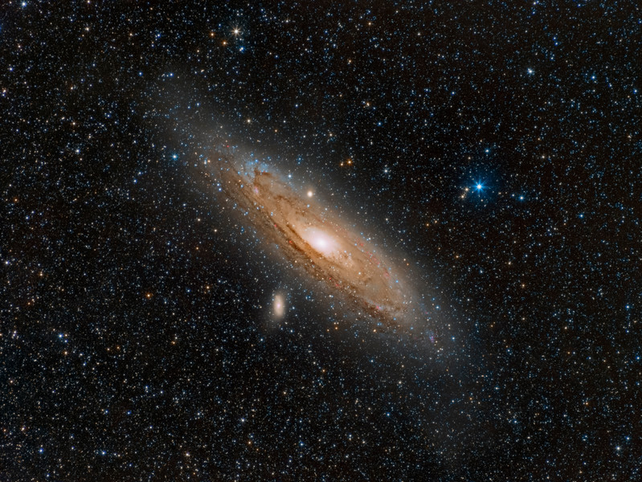

- FLI News:
- Sky & Teleschope Magazine Interviews FLI at NEAF 2017
- FLI Introduces New High QE 4710s and 4240s
- TRAPPIST Exoplanets Grow to Seven!
- FLI Introduces High Speed Filter Switcher
- Sky & Telescope Magazine Interviews FLI at NEAF 2016
- Introducing the ML 16200: 16 Megapixel Camera with 6 Micron Pixels
